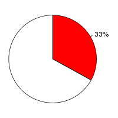
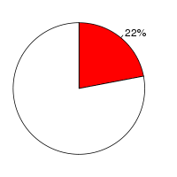
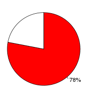

Human (Homo sapiens, GRCh37) and Armadillo(Dasypus novemcinctus, dasNov2) were aligned using the BlastZ alignment algorithm (Schwartz S et al., Genome Res.;13(1):103-7, Kent WJ et al., Proc Natl Acad Sci U S A., 2003;100(20):11484-9) in Ensembl release 55. Human was used as the reference species. After running BlastZ, the raw BlastZ alignment blocks are chained according to their location in both genomes. During the final netting process, the best sub-chain is chosen in each region on the reference species.
Full list of pairwise alignmentsNumber of alignment blocks: 1667425
| Genome coverage(bp) | Coding exon coverage (bp) | |
|---|---|---|
| Human |  |
|
| 1,026,752,746 out of 3,098,825,702 | 27,876,320 out of 35,483,623 | |
| Armadillo |  |  |
| 939,558,354 out of 4,294,967,295 | 18,371,150 out of 23,578,013 |